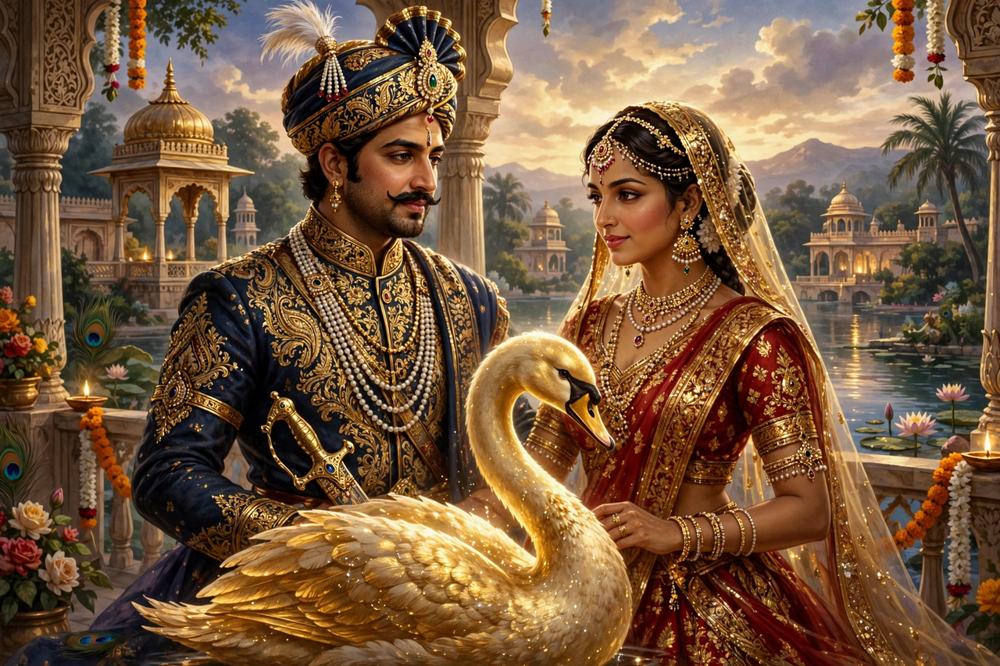

Nala and Damayanti
Nala and Damayanti (Sanskrit: नल दमयन्ती) is a celebrated love story from the Vana Parva (Book of the Forest) of the Mahabharata. It tells of Nala, king of Nishadha, and Damayanti, princess of Vidarbha, whose love survives gambling ruin, demonic possession, exile, and long separation. The tale is narrated to Yudhishthira by the sage Brihadashva as a consoling parallel to his own losses at dice — and as a story with a happier ending.

| Nala and Damayanti | |
|---|---|
| Source | Vana Parva, Mahabharata |
| Characters | Nala, Damayanti, Kali, Pushkara, Rituparna |
| Setting | Nishadha, Vidarbha, Ayodhya |
| Themes | Love, fate, gambling, perseverance |
Story
Nala, a virtuous and handsome king skilled in horsemanship and cookery but fatally fond of dice, fell in love with Damayanti after hearing of her beauty from a golden swan (hamsa) that carried messages between them. At her svayamvara, Damayanti chose Nala over the gods Indra, Agni, Varuna, and Yama, who had assumed Nala's form; she identified the true Nala because the gods cast no shadow, did not sweat, and their feet did not touch the ground.
The demon Kali, arriving too late to win Damayanti, vowed revenge and after twelve years found a flaw in Nala, entering his body and driving him to gamble away his kingdom to his brother Pushkara. Exiled, Nala deserted Damayanti in the forest hoping she would return to her father's protection. Damayanti survived trials in the wilderness, served as a maid in Chedi, and was eventually restored to Vidarbha.
Nala, bitten by the serpent Karkotaka, was transformed into the dwarf charioteer Bahuka and entered the service of King Rituparna of Ayodhya, from whom he learned the science of dice (akshahridaya) in exchange for his own knowledge of horses. This knowledge expelled Kali from his body. Damayanti, suspecting Bahuka's identity, announced a false second svayamvara; Rituparna drove to Vidarbha in a single day with Bahuka as charioteer. Tests — the taste of his cooking, the spontaneous flowering of trees at his touch — confirmed Nala's identity, and the couple were reunited. Nala then challenged Pushkara to a final game and regained his kingdom.
Literary afterlife
The story became one of the most beloved in Sanskrit literature. Sriharsha's court epic Naishadhacarita (12th century) retells the first part of the tale and is counted among the five great mahakavyas. The tale spread through Persian, European, and modern adaptations, and remains a standard of fidelity and endurance in love.